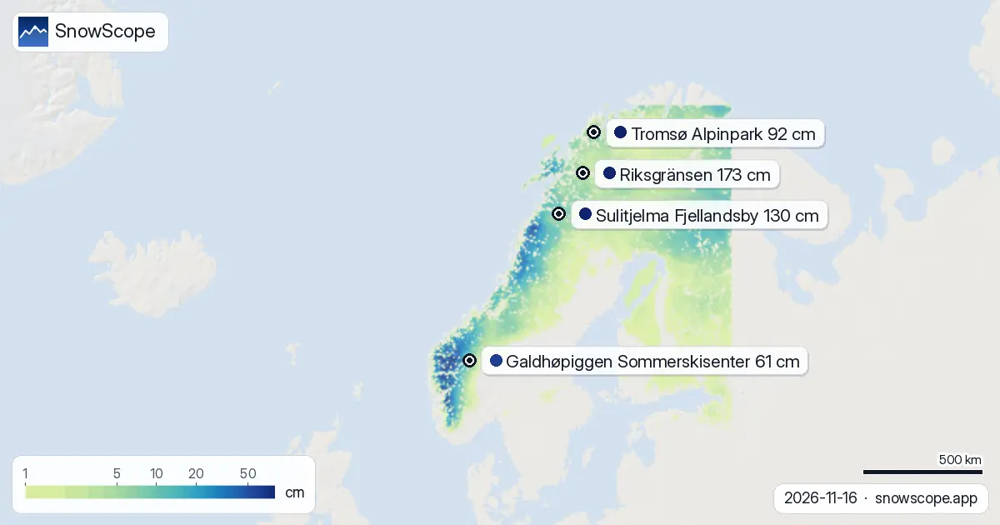

Where the snow fell in Norway: Jotunheimen first, up to 55 cm
The last three days brought up to 55 cm in Norway. The snow did not fall evenly: Jotunheimen and Hardangervidda got the most.
See the live snow forecast for Riksgränsen in the SnowScope appSnow depth, powder alerts and the 3D map, free.
Where the snow fell
At least 5 cm fell over some 133,130 km². Resorts on the side of the mountains that faced the weather got the fresh snow; sheltered valleys got far less.
246,310 km² of snow-covered ground in Norway this Monday, up 5,370 km² on yesterday. In other words, 87 % of the mapped high ground is white.
| Resort | Snow depth | New snow, 72 h | Coming, next days | Top |
|---|---|---|---|---|
| Riksgränsen | 173 cm | 4 cm | 5 cm | 900 m |
| Sulitjelma Fjellandsby | 130 cm | 10 cm | 3 cm | 542 m |
| Tromsø Alpinpark | 92 cm | 8 cm | 4 cm | – |
| Galdhøpiggen Sommerskisenter | 61 cm | 19 cm | 1 cm | 2,180 m |
| Steilia | 58 cm | 3 cm | 2 cm | – |

New snow in the last three days
Jotunheimen and Hardangervidda got the most fresh snow over three days, up to 55 cm.
The last 24 hours alone brought up to 11 cm.
At least 5 cm fell over some 133,130 km².
The resorts with the most snow
At the top of the list, Riksgränsen reports 173 cm.
Next on the list: Sulitjelma Fjellandsby (130 cm), Tromsø Alpinpark (92 cm), Galdhøpiggen Sommerskisenter (61 cm) and Steilia (58 cm).
Riksgränsen picked up 4 cm in the last three days and could add 5 cm by Thursday 19 November.
Sulitjelma Fjellandsby picked up 10 cm in the last three days and could add 3 cm by Thursday 19 November.
Count 144 white resorts out of 155 in Norway today.
The rest of the shortlist: Tromsø Alpinpark: 92 cm on top, 8 cm in three days, 4 cm expected; Galdhøpiggen Sommerskisenter: 61 cm on top, 19 cm in three days, 1 cm expected; Steilia: 58 cm on top, 3 cm in three days, 2 cm expected.
What is coming
Snow is in the forecast: up to 11 cm by the end of the third day, up to 39 cm within seven days.
The snowiest day looks like Friday 20 November, with up to 16 cm in the snowiest spots.
The second week adds up to 35 cm where it snows most.
Low, middle and high ground
Average depth of the snowpack by height band: between 0 and 500 m, 7 cm on average, 77 % covered; between 500 and 1,000 m, 18 cm on average, 96 % covered; between 1,000 and 1,500 m, 25 cm on average, 100 % covered; between 1,500 and 2,000 m, 29 cm on average, 100 % covered; between 2,000 and 2,500 m, 39 cm on average, 100 % covered.
Snow cover today
Last week's 125,910 km² has grown by 120,400 km². Even the lowest ground is mostly white.
Compared with past winters
Here is how the deepest resorts compare with their usual 16 November: Riksgränsen: 55 cm at about 708 m, against 57 cm in a normal year; Sulitjelma Fjellandsby: 50 cm at about 465 m, against 51 cm in a normal year; Tromsø Alpinpark: 16 cm at about 222 m, against 36 cm in a normal year; Galdhøpiggen Sommerskisenter: 33 cm at about 2,015 m, against 80 cm in a normal year.
0 of these 4 resorts are above their usual depth for the date.
These depths are for one height on each mountain, below the top, so they read lower than the upper-slope numbers further down.
In past winters the best snow at Riksgränsen usually came early April / mid-April.
The neighbours today
For comparison, the neighbours on the same day: Sweden: 79 % white, deepest Abisko with 129 cm, up to 18 cm in the week ahead; Finland: 52 % white, deepest Kallin with 23 cm, up to 19 cm in the week ahead.
Planning a day on the snow
Above 500 m the ground is almost fully white (96 % covered), so runs up there have a continuous base.
Between 0 m and 500 m the cover is patchy, about 77 % white: expect grass and stones between the snow.
If you can choose the day, go after Friday 20 November: the fresh snow then has time to settle and the roads to be cleared.
What it means on the slopes
The new snow freshens the upper slopes; lower down it may already be heavy or wet.
Keep an eye on the forecast: the coming snow could change the picture quickly.
Tips for skiers
- Roads to the higher resorts may need winter tyres or chains.
- Snow above the tree line can be wind-packed: watch the ridges.
- Check the resort's own lift status before you travel.
About these numbers
Resort snow depths are the deepest snow on the resort's upper slopes from the SnowScope snow model (about 1 km, run of 16 November); they are estimates for an area, not a measurement at one point. Station values are measurements on the date shown. Forecasts can change. Always read the official avalanche bulletin before going off-piste.
Cite this report
For research, teaching or the press: the numbers and charts are free to reuse under CC BY 4.0 with this citation.
SnowScope (2026), Where the snow fell in Norway: Jotunheimen first, up to 55 cm, https://snowscope.app/blog/en/2026/11/norway-snow-report-16-november-2026.html, accessed 2026-11-16
SnowScope (Atlas Labs). (2026, November 16). Where the snow fell in Norway: Jotunheimen first, up to 55 cm. SnowScope snow reports. https://snowscope.app/blog/en/2026/11/norway-snow-report-16-november-2026.html
BibTeX
@misc{snowscope2026norwaysnowreport16novemb,
author = {{SnowScope (Atlas Labs)}},
title = {Where the snow fell in Norway: Jotunheimen first, up to 55 cm},
year = {2026},
month = nov,
howpublished = {\url{https://snowscope.app/blog/en/2026/11/norway-snow-report-16-november-2026.html}},
note = {Published 2026-11-16 20:42 UTC; accessed 2026-11-16}
}· CC BY 4.0 · Methods, data and tools →
Riksgränsen: snow and temperature by height, this winter vs last (tools) →
Follow Riksgränsen
Free: a message when fresh snow is coming, and the forecast every morning.
More snow reports

Boí Taüll starts at 2039 m and beats Baqueira Beret on day-pass price, though early December snow still takes some patience.

Big Sky, Montana, made easy to picture: 5,850 acres under Lone Peak, and snow that is about five times deeper near the top than at the base in 46 past winters.

Baqueira-Beret sits in the Val d'Aran, on the Atlantic side of the Pyrenees. What that means for its snow, tested with 46 past winters against La Molina, and when to go.